Этот урок будет интересным и познавательным. Мы научимся применять дроби для различных жизненных случаев.
Содержание урока- Нахождение дроби от числа
- Нахождение целого числа по дроби
- Деление меньшего числа на большее
- Какую часть одно число составляет от другого
- Задания для самостоятельного решения
Нахождение дроби от числа
Мы уже говорили, что дробь это часть от чего-либо. Эта часть может быть чем угодно. Например, \(\frac{1}{2}\) от пиццы это половина пиццы:

Но применение дробей не заканчивается на одной пицце. Например, можно узнать сколько составляет \(\frac{1}{2}\) от десяти сантиметров:
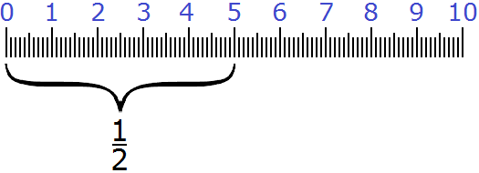
Как вы уже догадались \(\frac{1}{2}\) от десяти сантиметров составляют пять сантиметров. Ведь \(\frac{1}{2}\) это простейшая дробь, которая означает половину от чего-то. У нас было десять сантиметров. Мы разделили эти десять сантиметров пополам и получили пять сантиметров.
Попробуем узнать, сколько составляет \(\frac{1}{2}\) от одного часа. Вспоминаем, что час это 60 минут. Нам нужно найти \(\frac{1}{2}\) (половину) от 60 минут. Нетрудно догадаться, что половина от 60 минут это 30 минут. Значит \(\frac{1}{2}\) от одного часа составляет 30 минут или полчаса.
Попробуем найти \(\frac{1}{2}\) от одного центнера. Центнер это 100 кг. Требуется найти \(\frac{1}{2}\) (половину) от 100 кг. Нетрудно догадаться, что половина от 100 кг это 50 кг. Значит \(\frac{1}{2}\) от одного центнера составляют 50 кг.
Поскольку мы занимаемся математикой, значит в большинстве случаев будем иметь дело с числами. Например, найдём \(\frac{1}{2}\) от числа 12.
Итак, нужно найти половину от числа 12. Нетрудно догадаться, что половиной от числа 12 является число 6. Значит \(\frac{1}{2}\) числа 12 составляет число 6.
Чтобы легче было находить дробь от числа, можно пользоваться следующим правилом:
Чтобы найти дробь от числа, нужно это число разделить на знаменатель дроби, и полученный результат умножить на числитель дроби.
Попробуем проследить весь процесс работы этого правила. Для примера возьмём десять сантиметров:
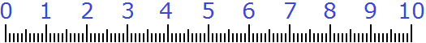
Пусть требуется найти \(\frac{1}{2}\) от этих десяти сантиметров. Читаем первую часть правила:
Чтобы найти дробь от числа, нужно это число разделить на знаменатель дроби \(\frac{1}{2}\)
Итак, делим десять сантиметров на знаменатель дроби \(\frac{1}{2}\). Знаменатель этой дроби равен числу 2. Поэтому делим десять сантиметров на 2
10 см : 2 = 5 см
Читаем вторую часть правила:
и полученный результат умножить на числитель дроби \(\frac{1}{2}\)
Итак, умножаем пять сантиметров на числитель дроби \(\frac{1}{2}\). Числитель дроби в данном случае единица. Поэтому умножаем пять сантиметров на единицу:
5 см × 1 = 5 см
Мы нашли \(\frac{1}{2}\) от десяти сантиметров. Видим, что \(\frac{1}{2}\) от десяти сантиметров составляют пять сантиметров:
Почему же после деления числа на знаменатель дроби приходиться умножать полученный результат на числитель дроби? Дело в том, что знаменатель дроби показывает на сколько частей что-либо разделено, а числитель показывает сколько частей было взято.
В нашем примере десять сантиметров были разделены на две части (пополам), и из этих частей была взята одна часть. Умножая одну часть на числитель дроби, мы тем самым указываем сколько частей мы берём от чего-то. То есть умножив пять сантиметров на числитель дроби \(\frac{1}{2}\), мы тем самым указали, что берем одну часть из двух.
Пример 2. Найти \(\frac{2}{5}\) от 10 см.
Применим правило нахождения дроби от числа:
Чтобы найти дробь от числа, нужно это число разделить на знаменатель дроби, и полученный результат умножить на числитель дроби.
Сначала делим 10 сантиметров на знаменатель дроби \(\frac{2}{5}\)
10 см : 5 = 2 см
Получили два сантиметра. Этот результат нужно умножить на числитель дроби \(\frac{2}{5}\)
2 см × 2 = 4 см
Мы нашли \(\frac{2}{5}\) от десяти сантиметров. Видим, что \(\frac{2}{5}\) от десяти сантиметров составляют четыре сантиметра.
Весь процесс решения можно увидеть на следующем рисунке:
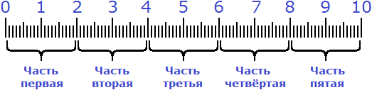
Сначала десять сантиметров были разделены на пять равных частей. Затем было взято две части из этих пяти частей:
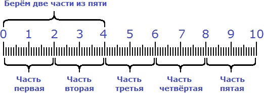
Пример 3. Найти \(\frac{3}{8}\) от числа 56.
Чтобы найти \(\frac{3}{8}\) от числа 56, нужно это число разделить на знаменатель дроби
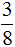
, и полученный результат умножить на числитель дроби .Итак, сначала делим число 56 на знаменатель дроби \(\frac{3}{8}\)
\[56 : 8 = 7\]
Теперь умножаем полученное результат на числитель дроби
\[7 \times 3 = 21\]
Получили ответ 21. Значит \(\frac{3}{8}\) от числа 56 составляет 21.
Пример 4. Найти \(\frac{2}{4}\) от одного часа.
Один час это 60 минут. Задание можно понимать, как нахождение \(\frac{2}{4}\) от 60 минут.
Сначала разделим 60 минут на знаменатель дроби \(\frac{2}{4}\)
60 мин : 4 = 15 мин
Теперь умножим полученные 15 минут на числитель дроби \(\frac{2}{4}\)
15 мин × 2 = 30 мин
Получили в ответе 30 минут. Значит \(\frac{2}{4}\) от одного часа составляют тридцать минут или полчаса.
Пример 5. Найти \(\frac{4}{5}\) от одного метра.
Один метр это сто сантиметров. Сначала разделим 100 см на знаменатель дроби \(\frac{4}{5}\)
100 см : 5 = 20 см
Теперь умножим полученные 20 см на числитель дроби \(\frac{4}{5}\)
20 см × 4 = 80 см
Получили ответ 80 см. Значит \(\frac{4}{5}\) от одного метра составляют 80 см.
Нахождение целого числа по дроби
Зная часть числа и сколько это составляет от целого числа, можно найти изначальное целое число. Это обратная задача к той, которую мы рассматривали в предыдущей теме. Там мы искали дробь от числа, деля это число на знаменатель дроби, и полученный результат умножая на числитель дроби.
А сейчас наоборот, зная дробь и сколько это составляет от числа, найти изначальное целое число.
Например, если \(\frac{2}{5}\) длины линейки составляют шесть сантиметров и нам говорят найти длину всей линейки, то мы должны понимать, что от нас требуют найти изначальное целое число (длину всей линейки) по дроби \(\frac{2}{5}\). Давайте решим эту задачу.
Требуется найти длину всей линейки по дроби \(\frac{2}{5}\). Известно, что \(\frac{2}{5}\) длины всей линейки составляют 6 см.
Мы уже знаем каким образом получились эти 6 см. Имелась какая-то длина, её разделили на пять частей, поскольку знаменатель дроби \(\frac{2}{5}\) это число 5. Затем было взято две части от пяти частей, поскольку числитель дроби \(\frac{2}{5}\) это число 2.
Чтобы узнать длину всей линейки, сначала нужно узнать длину одной части. Как это узнать? Попробуем догадаться, внимательно изучив следующий рисунок:
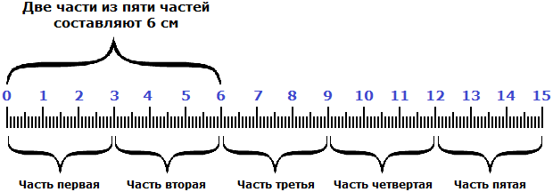
Если две части длины линейки составляют 6 см, то нетрудно догадаться, что одна часть составляет 3 см. А чтобы получить эти 3 см, надо 6 разделить на 2
6 см : 2 = 3 см
Итак, мы нашли длину одной части. Одна часть из пяти или \(\frac{1}{5}\) длины линейки составляет 3 см. Если частей всего пять, то для нахождения длины линейки, нужно взять три сантиметра пять раз. Другими словами, умножить 3 см на число 5
3 см × 5 = 15
Мы нашли длину линейки. Она составляет 15 сантиметров. Это можно увидеть на следующем рисунке.
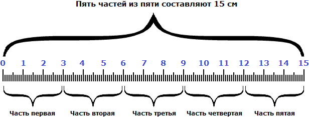
Видно, что пять частей из пяти или \(\frac{5}{5}\) составляют пятнадцать сантиметров.
Чтобы легче было находить число по его дроби, можно пользоваться следующим правилом:
Чтобы найти число по его дроби, нужно известное число разделить на числитель дроби, и полученный результат умножить на знаменатель дроби.
Пример 2. Число 20 это \(\frac{4}{5}\) от всего числа. Найдите это число.
Знаменатель дроби \(\frac{4}{5}\) показывает, что число, которое мы должны найти, разделено на пять частей. Если \(\frac{4}{5}\) этого числа составляет число 20, то для нахождения всего числа, сначала нужно найти \(\frac{1}{5}\) (одну часть из пяти) от всего числа. Для этого 20 надо разделить на числитель дроби \(\frac{4}{5}\)
\[20 : 4 = 5\]
Мы нашли \(\frac{1}{5}\) от всего числа. Эта часть равна 5. Чтобы найти всё число, нужно полученный результат 5 умножить на знаменатель дроби \(\frac{4}{5}\)
\[5 \times 5 = 25\]
Мы нашли \(\frac{5}{5}\) от всего числа. Другими словами, нашли всё число, которое от нас требовали найти. Это число 25.
Пример 3. Десять минут это \(\frac{2}{3}\) времени приготовления каши. Найдите общее время приготовления каши.
Знаменатель дроби \(\frac{2}{3}\) показывает, что общее время приготовления каши разделено на три части. Если \(\frac{2}{3}\) времени приготовления каши составляет десять минут, то для нахождения общего времени приготовления, нужно сначала найти \(\frac{1}{3}\) времени приготовления. Для этого 10 нужно разделить на числитель дроби \(\frac{2}{3}\)
10 мин : 2 = 5 мин
Мы нашли \(\frac{1}{3}\) времени приготовления каши. \(\frac{1}{3}\) времени приготовления каши составляют пять минут. Для нахождения общего времени приготовления, нужно 5 минут умножить на знаменатель дроби
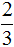
5 мин × 3 = 15 мин
Мы нашли \(\frac{3}{3}\) времени приготовления каши, то есть нашли общее время приготовления. Оно составляет 15 минут.
Пример 4.
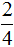
массы мешка цемента составляет 30 кг. Найти общую массу мешка.Знаменатель дроби показывает, что общая масса мешка разделена на четыре части. Если массы мешка составляет 30 кг то для того, чтобы найти общую массу мешка нужно сначала найти массы мешка. Для этого 30 надо разделить на числитель дроби .
30кг : 2 = 15кг
Мы нашли массы мешка. массы мешка составляет 15 кг. Теперь, чтобы найти общую массу мешка, надо 15кг умножить на знаменатель дроби
15кг × 4 = 60кг
Мы нашли
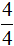
массы мешка. Другими словами, нашли общую массу мешка. Общая масса мешка цемента составляет 60 кг.Деление меньшего числа на большее
В жизни часто возникают ситуации, когда требуется разделить меньшее число на большее. Например, представим ситуацию. Имеется трое друзей:
И требуется поровну разделить между ними два яблока. Как это сделать? Друзей трое, а яблок всего два. Мы попали в ситуацию в которой требуется разделить меньшее число на большее (два яблока на троих).
Для таких случаев предусмотрено следующее правило:
При делении меньшего числа на большее получается дробь, в числителе которой делимое, а в знаменателе – делитель.
Давайте применим это правило. Оно говорит, что при делении меньшего числа на большее получается дробь, в числителе которой делимое, а в знаменателе делитель. Делимое у нас это два яблока. Записываем в числителе число 2:
А делитель у нас это трое друзей (вспоминаем, что делитель показывает на сколько частей надо разделить делимое). Записываем тройку в знаменателе нашей дроби:
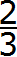
Забавно, но дробь это ответ к нашей задаче. Каждому другу достанется яблока. Почему так произошло?
Чтобы разделить два яблока на троих, надо разрезать ножом каждое яблоко на три части и раскидать поровну эти куски между тремя друзьями:
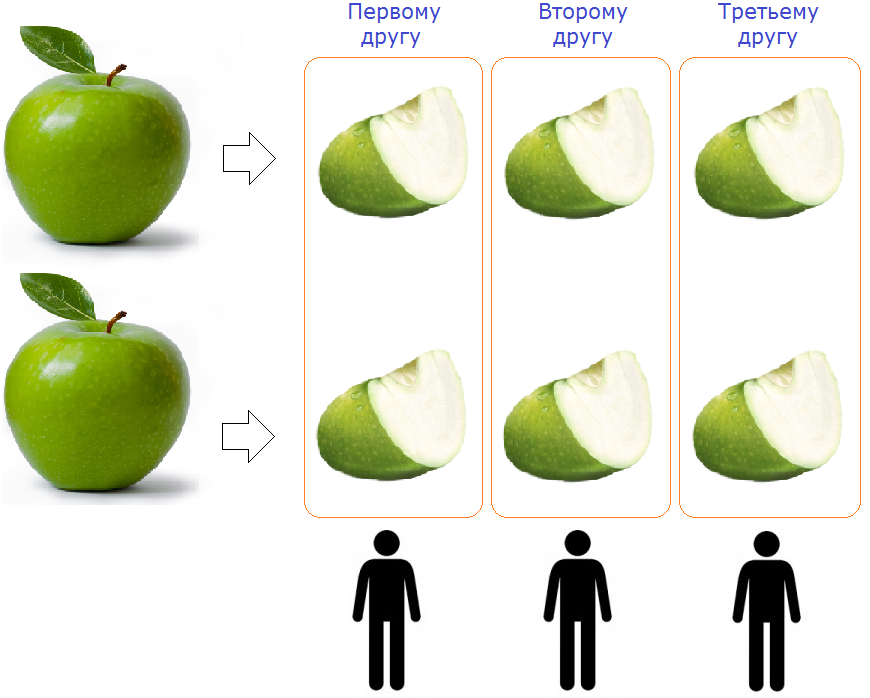
Как видно на рисунке, каждое яблоко было разделено на три части и раскидано поровну на троих друзей. Каждому другу досталось яблока (два кусочка из трёх).
Какую часть одно число составляет от другого
Иногда возникает необходимость узнать какую часть первое число составляет от второго. Для таких случаев предусмотрено следующее правило:
Чтобы узнать какую часть первое число составляет от второго, надо первое число разделить на второе.
Например, яблоко разделили на пять одинаковых долек. Какую часть яблока составляют две дольки?
Чтобы ответить на этот вопрос, надо первое число разделить на второе. Первое число это 2, второе — 5. Получается дробь
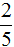
.Значит две дольки из пяти долек составляют две пятых. Это можно увидеть на следующем рисунке:
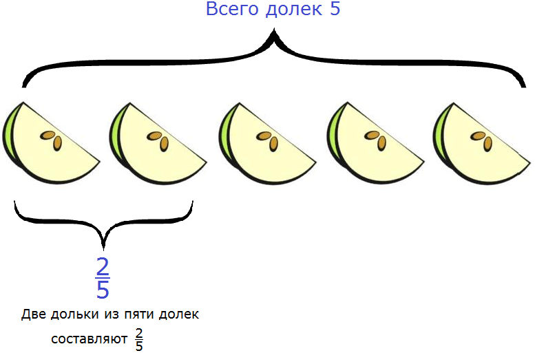
Итак, две дольки яблока из пяти составляют две пятых.
Возникает вопрос, а как узнать какое число первое, а какое второе? Для этого нужно посмотреть на вопрос, который поставлен в задаче. То число, которое указано в вопросе задачи, оно и будет первым числом. Например, в предыдущей задаче вопрос был поставлен так:
«Какую часть яблока составляют две такие дольки?»
Если внимательно присмотреться к вопросу, то можно обнаружить, что в нём указано число 2. Оно и стало первым числом.
Иногда в вопросе мелькает сразу два числа. Например: какую часть составляет число 2 от числа 10?
В этом случае первым числом будет то, которое в вопросе расположено раньше. В данном случае первое число это 2, а второе 10. Делим 2 на 10, получаем дробь
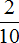
. Значит число 2 от числа 10 составляет (две десятых).Дробь означает, что число 10 разделено на десять частей, и от этих десяти частей взято две части.
Также, эту дробь можно сократить на 2. После сокращения дроби на 2 получаем дробь .
Дробь тоже может послужить ответом к задаче. Она будет означать, что число 10 разделено на пять частей, и от этих пяти частей взята одна часть.
Таким образом, число 2 составляет (одну пятую) от числа 10.
Пример 3. Какую часть составляет число 5 от числа 15?
Делим первое число на второе. Первое число 5, а второе 15. Делим 5 на 15, получаем дробь
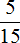
. Эту дробь можно сократить на 5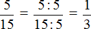
Получили аккуратную дробь . Значит ответ будет выглядеть следующим образом:
Число 5 составляет (одну третью) от числа 15.
Это можно даже проверить. Для этого нужно найти от числа 15. Если мы всё сделали правильно, то должны получить число 5.
Итак, найдём от числа 15. Как находить дробь от числа мы уже знаем
\[15 : 3 = 5\]
\[5 \times 1 = 5\]
Получили ответ 5. Значит задача была решена правильно.
Пример 4. Какую часть 3 см составляют от 12 см?
Делим первое число на второе. Первое число это 3, а второе 12. Получаем дробь
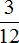
. Эту дробь можно сократить на 3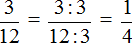
Получили ответ . Значит 3 см составляют (одну четвёртую) от 12 см.
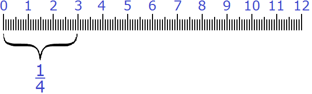
Проверим правильно ли мы решили эту задачу. Для этого найдём от 12 см. Если мы всё сделали правильно, то должны получить 3 см.
Делим 12 на знаменатель дроби
12 см : 4 = 3 см
Умножаем полученные 3 см на числитель дроби
3 см × 1 = 3 см
Получили ответ 3 см. Значит задача была решена правильно.
Задания для самостоятельного решения
Показать решение
15 × 1 = 15
Показать решение
10 × 2 = 20
Показать решение
10 × 3 = 30
 от числа 48.
от числа 48.Показать решение
8 × 5 = 40
Показать решение
6 × 5 = 30
Показать решение
40 см × 2 = 80 см
Показать решение
50 см × 2 = 100 см
Показать решение
8 × 3 = 24
Показать решение
32 × 2 = 64
Показать решение
30 × 8 = 240
Показать решение
2 км × 3 = 6 км
Показать решение
20 см × 8 = 160 см
Понравился урок?
Вступай в нашу новую группу Вконтакте и начни получать уведомления о новых уроках
Возникло желание поддержать проект?
Используй кнопку ниже